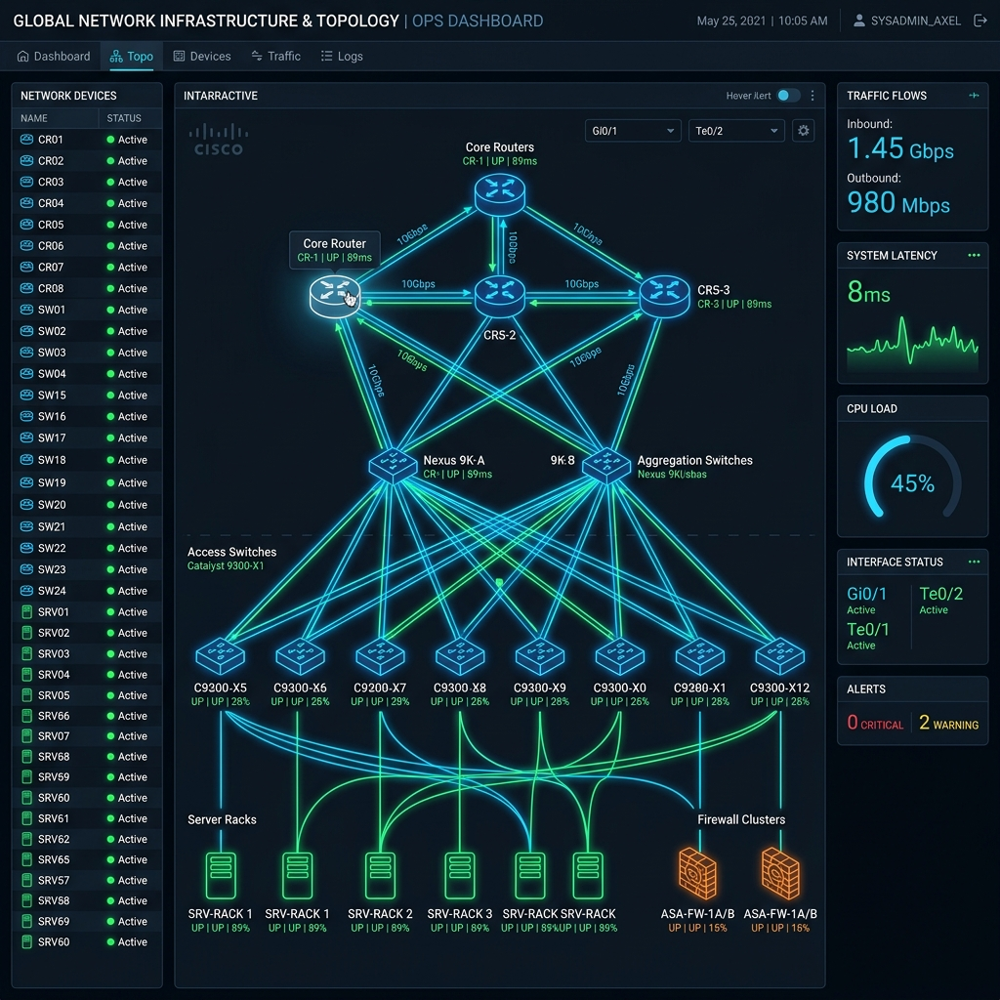
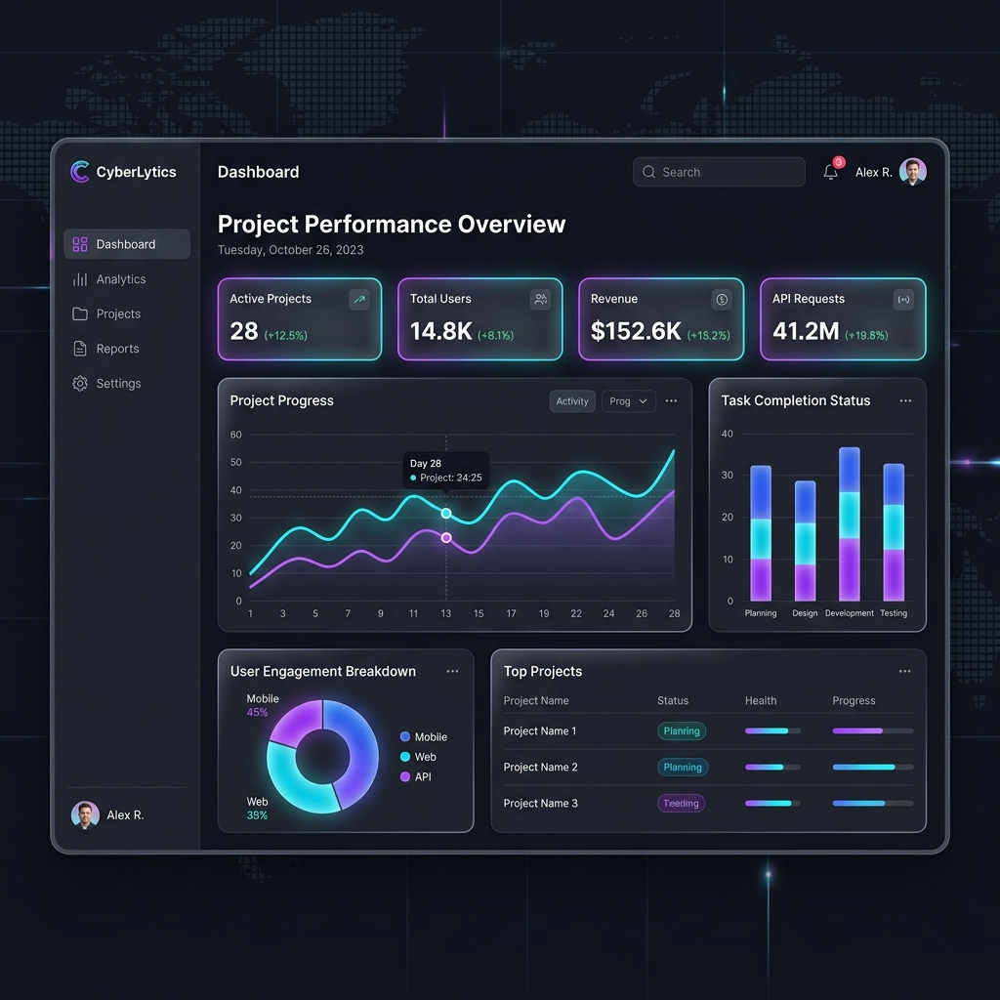

Architecte & Administrateur
Systèmes, Réseaux & Sécurité
Stagiaire à la DPTIC / SIMEN (Division de la Promotion des TIC — Ministère de l'Éducation Nationale du Sénégal) & étudiant en dernière année de Master 2 RESI au Groupe ISI Dakar. Je conçois et déploie des infrastructures souveraines à haute disponibilité (IAM Keycloak SSO, cœurs de réseaux Cisco & Huawei, durcissement L2/IPsec et environnements conteneurisés durcis).
Ababacar Ousmane Niang
Schéma d'Infrastructure Interactif
Explorez les briques d'infrastructure déployées : cliquez sur chaque composant pour inspecter les flux de protocoles, la sécurité et les choix d'ingénierie.
Cluster IAM Keycloak
Cœur & Routage Résilient
Défense en Profondeur
VMware vSphere & Proxmox
Infrastructure d'authentification centralisée souveraine conçue pour l'écosystème de l'Éducation Nationale (DPTIC / SIMEN). Élimination des silos applicatifs, interconnexion aux annuaires OpenLDAP/Active Directory, émission de jetons JWT asymétriques signés par clé privée RS256 et imposition de l'authentification multifacteur (MFA / WebAuthn).
- Protocole d'échange : OpenID Connect (OIDC / PKCE) & SAML 2.0
- Chiffrement des sessions : TLS 1.3 avec algorithmes courbes elliptiques
- Souveraineté : Hébergement local sans dépendance externe Cloud GAFAM
Compétences d'Ingénierie
Plus de pourcentages arbitraires : une cartographie concrète par piliers technologiques, niveaux de maturité opérationnelle et stacks certifiées.
Systèmes & Virtualisation Datacenter
Gestion avancée Debian, Ubuntu Server, Alpine. Active Directory (AD DS, GPO, DNS, DHCP), contrôle d'intégrité, services IIS, gestion des rôles et sécurisation système.
Déploiement d'hyperviseurs ESXi, clustering vCenter HA/DRS, migration à chaud vMotion, stockage partagé SAN/iSCSI, grappes Proxmox VE avec conteneurs LXC.
Collecte de métriques temps réel sous Prometheus & Grafana, centralisation des logs sous Graylog SIEM, alertage Zabbix et ITSM d'entreprise (GLPI + FusionInventory).
Infrastructures Réseaux & Télécoms
Architecture OSPFv2 multi-zones, découpage VLSM, notions BGP, redondance de passerelle FHRP (HSRP/VRRP avec tracking) et adressage hiérarchique IPv4/IPv6.
Segmentation par VLANs 802.1Q, Trunking, agrégation de liens EtherChannel LACP à 2 Gbps, Spanning Tree (PVST+, MSTP) et relais DHCP inter-VLAN.
Serveur de téléphonie Cisco CME (CallManager Express), protocoles SCCP/SIP, routage des flux vocaux et priorisation QoS avec marquage DSCP et CoS.
Fédération d'Identités & IAM Souverain
Déploiement et sécurisation de Keycloak. Standards OpenID Connect (OIDC / PKCE), SAML 2.0, OAuth 2.0, chiffrement asymétrique des jetons JWT signés en RS256.
Synchronisation bidirectionnelle avec annuaires OpenLDAP et Microsoft Active Directory, authentification multifacteur (MFA / OTP), politiques d'accès RBAC et ABAC.
Tunnels chiffrés VPN IPsec Site-à-Site (IKEv1/v2, AES-256, SHA-256), protection commutateurs contre attaques L2 (Port-Security, DHCP Snooping, DAI) et DMZ pare-feu étanche.
DevOps, Cloud & Automatisation
Conception de Dockerfiles multi-stage réduits sous Alpine Linux, exécution sans privilèges root, segmentation réseau bi-tiers sous Docker Compose et persistance de données sécurisée.
Pipelines automatisés sous GitHub Actions pour le test, la conformité de sécurité, le build et le déploiement continu d'applications et de référentiels d'ingénierie.
Configuration Cloud AWS (politique de moindre privilège IAM, VPC, EC2). Développement mobile multiplateforme sous Flutter/Dart avec gestion d'état réactive (Provider).
Projets d'Ingénierie
Chaque projet est documenté avec son architecture réelle, ses scripts de configuration, ses topologies Packet Tracer ou ses configurations Docker vérifiables.
Solution SSO Souveraine & Fédération d'Identités
Conception et déploiement d'une infrastructure d'authentification centralisée souveraine pour l'écosystème de la DPTIC / SIMEN (Ministère de l'Éducation Nationale). Cluster Keycloak 24+ conteneurisé interconnecté à OpenLDAP et PostgreSQL. Mise en œuvre des protocoles SAML 2.0, OpenID Connect (OIDC / PKCE), jetons asymétriques JWT RS256, authentification multifacteur (MFA) et contrôle d'accès fin RBAC/ABAC.

Cœur de Réseau Résilient Cisco & Huawei
Architecture d'entreprise multi-tiers (Cœur, Distribution, Accès). Routage dynamique OSPFv2 VLSM multi-zones, redondance de passerelle FHRP (HSRP/VRRP), agrégation EtherChannel LACP à 2 Gbps, segmentation multi-VLANs 802.1Q et priorisation de la voix sur IP (Cisco CME) par QoS DSCP/CoS.
Cybersécurité, Filtrage & Durcissement L2/L3
Défense en profondeur : neutralisation des attaques de couche 2 sur commutateurs (Port-Security, DHCP Snooping anti-rogue, Dynamic ARP Inspection, STP Root Guard), tunnel chiffré VPN IPsec Site-à-Site (IKEv1/v2, AES-256 / SHA-256) et isolation étanche DMZ pare-feu.

DevOps & Architecture Conteneurisée Multi-Tiers
Conteneurisation durcie via multi-stage builds sous Alpine Linux et exécution sous compte de service non-root. Segmentation réseau bi-tiers sous Docker Compose (front-tier NGINX exposé et back-tier PostgreSQL/Redis isolé), avec pipeline CI/CD automatisé sous GitHub Actions.
Application Mobile Multiplateforme (Flutter & Dart)
Application mobile réactive conçue selon les spécifications Material Design 3 de Google. Découpage modulaire strict avec gestion d'état réactive via le patron Provider, thématisation dynamique jour/nuit persistante (themeProvider.dart) et compatibilité Android, iOS et Web.
Infrastructure Virtualisée VMware vSphere HA
Conception d'une grappe de virtualisation en haute disponibilité sous VMware vSphere. Clustering d'hôtes ESXi pilotés de manière centralisée par vCenter Server, stockage partagé SAN/iSCSI redondant, basculement automatique vSphere HA/DRS et tolérance aux pannes matérielles.
Expérience & Formation
Une trajectoire résolument axée sur la rigueur d'ingénierie, la validation de standards industriels et l'immersion opérationnelle en environnement critique.
Stage en Administration Systèmes, Réseaux & Sécurité
Participation active au Maintien en Condition Opérationnelle (MCO), à la gestion, la sécurisation et la supervision des infrastructures serveurs et réseaux du ministère de l'Éducation nationale (DPTIC / SIMEN). Déploiement d'environnements virtualisés, contrôle des flux et administration des plateformes institutionnelles.
Master 2 Réseaux & Systèmes Informatiques (RESI)
Mémoire de fin d'études : Conception et implémentation d'une infrastructure d'authentification souveraine (Keycloak SSO / OpenLDAP).
Spécialisations : DevOps & MultiCloud, Cisco CCNP ENCOR, Huawei HCIP Datacenter, Big Data, Edge Computing et gouvernance ITIL.
Master 1 Réseaux & Systèmes Informatiques (RESI)
Administration avancée sous Linux et Windows Server (AD DS), sécurité des réseaux d'entreprise (durcissement L2, IPsec, DMZ), conteneurisation Docker, intelligence artificielle (Huawei HCIA) et développement mobile réactif Flutter.
Licence Professionnelle Informatique & Gestion
Socle académique fondamental : administration des systèmes, modélisation des bases de données relationnelles (SGBDR SQL), fondamentaux des réseaux informatiques et gestion de projets des systèmes d'information.
Certifications & Dossier Officiel
Consultez directement en ligne dans le visualiseur intégré ou téléchargez les diplômes et certifications Cisco vérifiées.
Curriculum Vitae Complet
Synthèse professionnelle complète intégrant le stage à la DPTIC / SIMEN, le Master 2 RESI et la maîtrise des référentiels industriels.
Cisco CCNA 1 (ITN)
Modèles OSI & TCP/IP, découpage d'adresses IPv4/IPv6, commutation de base et configuration des équipements Cisco IOS.
Cisco CCNA 2 (SRWE)
VLANs 802.1Q, Trunking, agrégation EtherChannel LACP, routage inter-VLAN et sécurité de commutation L2.
Cisco CCNA 3 (ENSA)
Routage dynamique OSPFv2, concepts WAN, VPN IPsec, ACLs de sécurité, QoS et automatisation des architectures réseau.
Diplôme de Licence Universitaire
Diplôme officiel sanctionnant les trois années universitaires de formation en Informatique et Gestion.
Rapports d'Ingénierie ISI
Retrouvez les livrables détaillés Proxmox VE, métrologie Prometheus/Grafana, ITSM GLPI et configurations réseau directement sur le dépôt GitHub.
Canaux de Contact Direct
Pour un projet d'infrastructure, un audit de sécurité réseau ou une opportunité d'embauche, contactez-moi par le canal de votre choix.
Messageries & Lignes Directes
Mobilité & Réseaux Professionnels
Mobile sur l'axe stratégique Diamniadio - Dakar. Ouvert aux opportunités locales (CDI, Missions de déploiement) ainsi qu'aux collaborations à distance (Full-Remote / International).